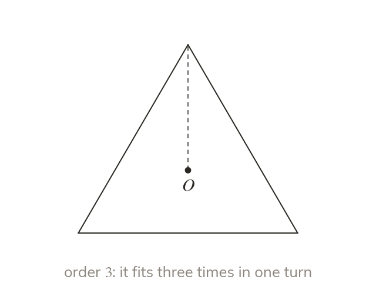

Counting the fits
The order of rotational symmetry counts how often a shape fits in one full turn. An equilateral triangle fits three times.
The order of rotational symmetry is how many times a shape looks identical during one full turn about its centre. An equilateral triangle fits three times: after a third of a turn, two thirds, and the full turn.